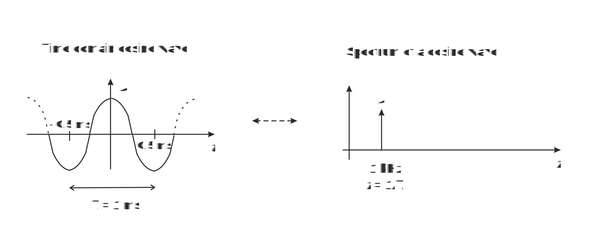
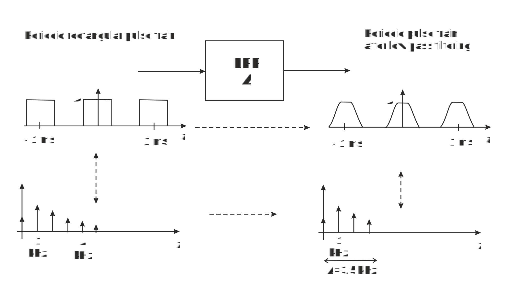

Objective of this Exercise is to understand fundamental concept of frequency domain representation of signals. This so called spectrum is a key to understand many phenomena in electrical communication technology.
Figure 1 shows a basic cosine waveform in time domain as we see it with an oscilloscope. As an example its cycle time is T, at which it repeats itself, is in figure 1 ms. Then there are 1000 cycles in a second, that is 1/T = 1000 1/s = 1000 Hz = 1 kHz = f (frequency or cyclical frequency).fft linkki.
Figure 1 Cosine waveform and its spectrum
On the right hand side of Figure 1 we see the corresponding spectrum, which we measure by spectrum analyser. Instead of time, horizontal axis represents now frequency telling which (cosine) frequency components the signal consists of. Signal in Figure 1 consists of one cosine waveform and its spectrum contains only one cosine frequency component at frequency of 1 kHz.
Both the time and frequency domain figures specify cosine waveform because they show its amplitude A and frequency f = 1/T. If we know the other, we can draw the other. However, we need both representations of signals because some things may be impossible to understand in time domain but easy to understand in frequency domain and vice versa.
Periodic signals repeat themselves at so called fundamental frequency. Periodic signals consist of harmonic frequency components, which are multiples of the fundamental frequency. Figure 2 shows a rectangular pulse train on left hand side, where pulses are repeated regularly in 1 ms periods. Now the fundamental frequency f0 = 1/T = 1/1ms = 1 kHz and harmonic frequencies n f0, where n = 0, 1, 2, ... Then in our example DC or zero harmonic, n = 0, is at frequency 0 Hz, the first harmonic, n = 1, is the fundamental frequency component at 1 kHz, the second harmonic frequency, n = 2, is 2 kHz, the third harmonic is 3 kHz, etc.
Figure 2 Rectangular pulse train, its spectrum and impact of LPF
Left hand side of Figure 2 shows a time domain rectangular pulse train and its original spectrum. When it is passed through a Low Pass Filter (LPF), all frequency components above LPF's bandwidth B disappear.
Spectrum at the output of LPF does not contain high frequencies, only components below B. Time domain waveform at output of LPF is the sum of its frequency components and it cannot change rapidly because lack of high frequencies (rapidly changing waveforms).
1. Rectangular pulse train with period of 1 ms, as in Figure 2, is passed through LPF with the bandwidth B = 500 Hz. What is the waveform like at the output of LPF?
2. What is the waveform like if B = 4 kHz?
What is the waveform like if B = 1 GHz
When you have answered all the questions you can submit your answers.
Congratulation, you have passed the test and may start Exercise 1: Signal wavefom and Spectrum.
Test failed. Consider again answers that are not correct